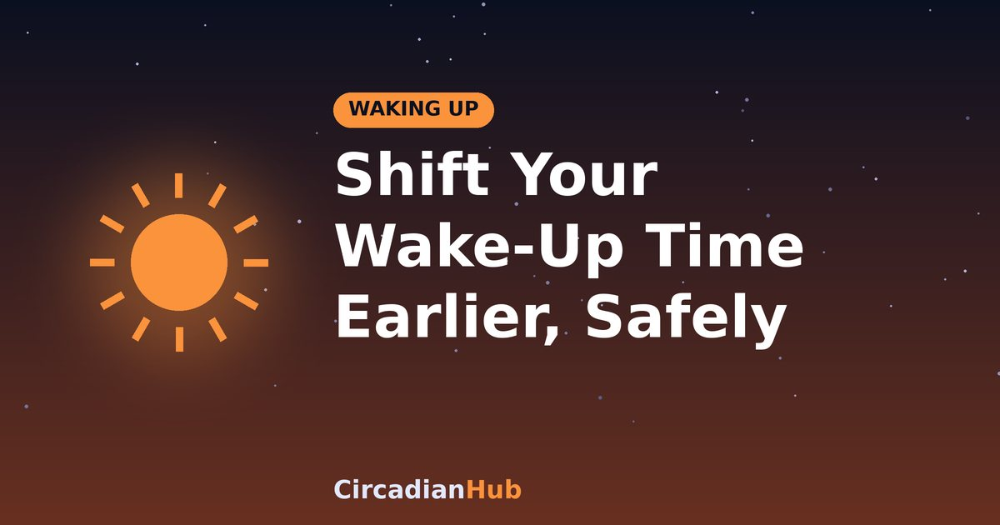

How to Safely Shift Your Wake-Up Time Earlier Without Sleep Deprivation

A new job, an early school run, a marathon plan or a simple wish to have calmer mornings: there are many reasons to wake earlier. The mistake most people make is to move the alarm two hours forward on Monday and hope for the best. Your body clock does not work like that, and the result is usually a week of exhaustion. This guide shows how to shift your wake-up time gradually, so you gain the hours without losing sleep.
Why you cannot just set an earlier alarm
Your body clock controls when you feel sleepy and alert. It is set mainly by light, and it moves by only about an hour or so a day at best, and often less when moving earlier. If you wake two hours earlier than usual, your clock is still on the old time. You feel sleepy at the new wake time and wide awake at the new bedtime, so you either lie awake or cut your sleep short. The way round this is to move both wake time and bedtime in small steps and to use light to help the clock along.
Step 1: Decide the target and the timeline
Choose the wake-up time you want and how much you need to move. A good rule is to shift by 15 to 30 minutes every two to three days. To move by 90 minutes, allow about two to three weeks. Larger, faster shifts are possible but tiring, and they suit people with a firm deadline.
| Shift needed | Pace | Time to allow |
|---|---|---|
| 30 minutes | 15 minutes every 2 days | About 4 days |
| 1 hour | 15 minutes every 2 to 3 days | About 1 week |
| 90 minutes | 15 to 30 minutes every 2 to 3 days | 2 to 3 weeks |
| 2 hours | 15 to 30 minutes every 2 to 3 days | 3 to 4 weeks |
Step 2: Move bedtime as well
If you wake earlier but do not go to bed earlier, you lose sleep. Work out the bedtime that gives you enough hours for the new wake time. For example, if you need 7.5 hours and want to wake at 6:00, you should be asleep by 22:30 and in bed at about 22:15. The CircadianHub shows options for any wake time on whole 90-minute cycles.
Shift bedtime in the same steps as your alarm. If you cannot fall asleep at the earlier time, do not lie in bed frustrated. Use a wind-down routine, dim the lights and keep the alarm time fixed, and sleepiness will come sooner over a few days.
Step 3: Use light as your main tool
Light is the strongest signal to your body clock, and its timing matters.
- Morning: get bright light soon after your new wake time, ideally outdoors for 10 to 30 minutes. This tells your clock the day has started earlier.
- Evening: dim the lights for the last hour or two before bed, and reduce screen brightness. Bright light in the late evening pushes your clock later, which works against you.
Our article on morning light and cortisol gives more detail on how this works.
Step 4: Watch caffeine, food and exercise
- Caffeine: stop at least six hours before your new bedtime, so it does not delay sleep.
- Meals: eat breakfast soon after waking and dinner a bit earlier. Regular meal times also signal to your clock.
- Exercise: morning or afternoon activity supports an earlier clock. Very late, intense exercise may make it harder to fall asleep for some people.
A sample 3-week plan: moving from 7:30 to 6:00
| Days | Wake time | Bedtime |
|---|---|---|
| 1 to 3 | 7:15 | 23:00 |
| 4 to 6 | 7:00 | 22:45 |
| 7 to 9 | 6:45 | 22:30 |
| 10 to 12 | 6:30 | 22:15 |
| 13 to 15 | 6:15 | 22:15 |
| 16 onwards | 6:00 | 22:15 |
This assumes you need about 7.5 hours. Your numbers may differ; adjust them to what leaves you feeling alert.
What about weekends?
Sleeping in at weekends undoes your progress. Try to keep your wake time within an hour of your weekday time, even on days off. If you really need to sleep in, keep it under about an hour, and get bright light as soon as you get up.
Common problems and fixes
| Problem | What to try |
|---|---|
| I cannot fall asleep at the earlier bedtime | Dim lights, wind down, get more morning light, shift by smaller steps |
| I feel exhausted at the new wake time | Slow the pace, add 15 to 30 minutes of sleep, check caffeine |
| I wake in the night | Keep the room cool and dark and avoid checking the time |
| I slip back at weekends | Keep weekend wake times within an hour of weekdays |
Melatonin: should you use it?
Low-dose melatonin taken a few hours before your desired bedtime can help shift the body clock earlier in some people. Timing and dose matter, and it is not right for everyone, so ask a doctor or pharmacist before trying it, especially if you take other medication or are pregnant.
Is waking early good for you?
Waking earlier is neither better nor worse in itself. What matters is getting enough sleep and matching your schedule to your life. Some people are naturally early risers and others are night owls. If you must wake early despite being a night owl, expect to need a few weeks of consistent habits, and do not expect to change your natural preference entirely.
A sample evening routine for the new schedule
| Time before bed | Activity |
|---|---|
| 2 hours | Finish your last caffeine and heavy meal; begin dimming lights |
| 1 hour | Put away work; use screens on low brightness or stop altogether |
| 30 minutes | Shower, stretch or read something calm |
| 10 minutes | Lights out, slow breathing, relaxed muscles |
For more ideas, see our guide to falling asleep faster.
Special situations
Winter mornings
Dark mornings make an early start harder. A bright lamp, a dawn-simulating light or a walk outdoors soon after sunrise all help. Keep your schedule consistent, since irregular timing makes the dark months more difficult.
Daylight saving changes
When the clocks go forward you lose an hour. Start moving your bedtime and wake time earlier by 15 minutes over the four days before, and get morning light on the day itself. When the clocks go back in autumn, see how to adjust to the daylight saving time change.
Teenagers and night owls
Teenagers naturally run later, so a forced early start is hard. Gradual shifts, morning light, limiting late screens and consistent weekends can help, but a certain amount of tiredness may remain until school times allow more sleep.
Shift workers
If your shifts change, use the same principles in the direction you need. See our rotating shift guide.
Track your progress
Keep a simple diary for the first few weeks: bedtime, wake time and how alert you felt at mid-morning on a scale of 1 to 5. If your rating is low for several days, slow down or add sleep. If it is steady or improving, keep going. Tracking also gives you evidence of what works, which helps you stay motivated.
Making the change last
The main reason people slip back is inconsistency, especially at weekends or when the routine is disrupted. Decide in advance what you will do on days off, what time you will stop looking at screens, and how you will handle a late night. If you have a bad night, keep the wake time the same and return to your normal bedtime the next evening.
Frequently asked questions
How long does it take to adjust?
Most people adapt within a couple of weeks when they shift gradually and use morning light.
Can I shift faster?
You can, but you may feel tired. Use bright morning light and dim evenings, and keep the new schedule strictly.
Is it OK to use a strong alarm?
Yes, but a gentle, rising alarm and bright light may feel better than a harsh sound.
What if I still feel tired?
Check that you are getting enough sleep. If tiredness continues, see our article on waking up feeling refreshed, and speak to a doctor.
Summary
- Shift wake time and bedtime together, by 15 to 30 minutes every two to three days.
- Use bright light after waking and dim lights in the evening.
- Limit caffeine in the afternoon and keep meals regular.
- Keep weekends close to your weekday schedule.
- Check that you still get enough total sleep.
Plan sleep around your shift with our Shift Work Sleep Calculator.
Sources and further reading
- NIGMS (NIH): Circadian Rhythms fact sheet
- CDC/NIOSH: How Shift Work and Long Work Hours Increase Health and Safety Risks
Last updated: 1 October 2026. Links are general background reading from public-health organisations. How we write and update our guides.
Medical disclaimer: This article is for general information only and is not medical advice. If you have persistent sleep problems or excessive daytime sleepiness, speak with a doctor or sleep specialist.